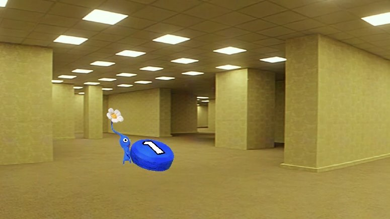
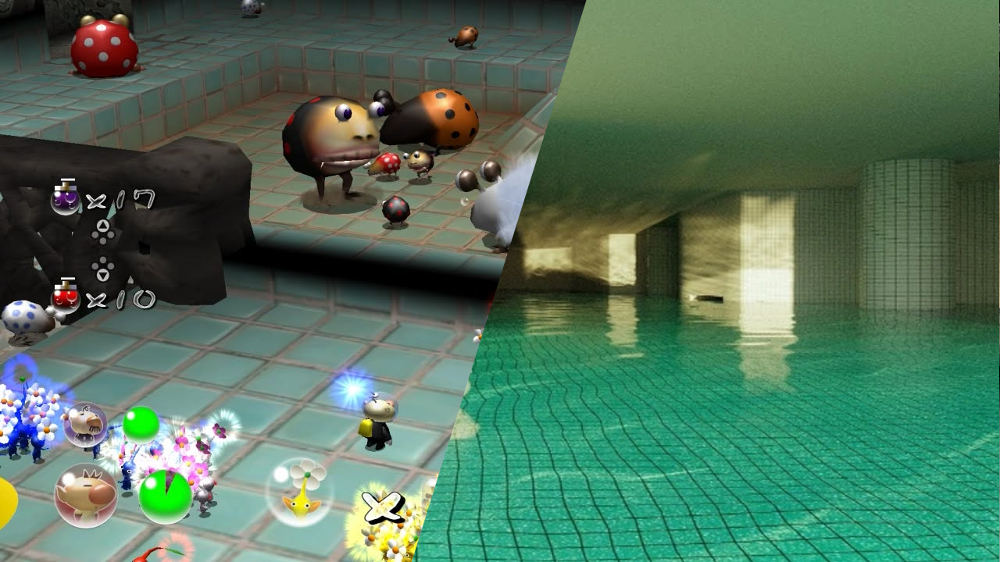

So… why is Pikmin 2 set in the Backrooms?

A clear indicator of my Pikmin brainrot
05/06/2026
I think I am genuinely suffering from some kind of Pikmin-based mind parasite. I can think of no other logical reason why I would leave the cinema after seeing Backrooms (2026), and the first thing that leaves my mouth would be “Wow, that was just like Pikmin 2!”
Movies are not my forte - I don’t really have a wide repertoire of knowledge about film-making, or a vast reference point of film to point to. Nor am I particularly clued into the global zeitgeist regarding film criticism: what’s hot, what’s not, and what people thought about the movie as a whole. And I am especially not in the loop regarding horror as a genre. But overall, I thought that the movie was excellently made, managing to embrace the elements of internet horror whilst effectively merging them to have a classic horror movie feel, adapting a very online concept to film, providing a larger narrative and themes for a different medium. From a technical side, it was masterfully put together - the set design and sound design and colour grading made the whole thing stick aesthetically and ultimately sold me on the experience. And I was both unsettled at times and scared at times; which I’m presuming is like… what it was going for.
Anyway, before I embarrass myself on my lack of film knowledge, I’m instead going to embarrass myself by talking about how this blockbuster film and/or the liminal horror trend that inspired it is actually just like 2002 GameCube game Pikmin 2. And how this actually made me like Pikmin 2 more… for some reason.
SO... WHY PIKMIN 2 SPECIFICALLY?
If you know me in real life, you’ll know that the Pikmin series takes up an uncomfortably large slice of my pizza brain. If you asked me unprompted to tell you my favourite game, Pikmin is often the answer I’ll give, and it has been that way since I was a kid. But even when I was a kid, it was always Pikmin; and not Pikmin 2.
Pikmin is a franchise with a herd of black sheep, each sequel taking the original in a completely different direction. You’ll often hear people saying “I love Pikmin 1 and 2, but 3 and 4 never really did it for me,” or “I loved how Pikmin 3 was a return to form after how weird 2 was,” or even the rare “I love Pikmin 4 because it has a dog in it!” (What a poser!)
Those opinions aren’t really relevant to the larger scope of this article (although a Pikmin retrospective would be fun to do one of these days). The only important bit here is the personal context that I’ve always been a member of the middle camp. Pikmin 3 is one of my favourite games ever, and Pikmin 2 has always seemed really off… mainly because it’s not an RTS.
Pikmin 1 is a game that establishes a new perspective for real-time strategy, framed by a behind-the-shoulder camera and re-packaging a PC staple for a console market. Nintendo are masters of the intuitive - taking the high concept and bringing it to everyone! Pikmin takes the esoteric nature of RTS’s and moulds them into something a bit more accessible, friendly, and action-packed. But underneath that freshly polished sheen is an inescapable layer of strategy, a hard edge and a proper deadline. Pikmin says, in explicit terms: “If you don’t complete this goal in 30 days of in-game time, then you will fail.” Game over.
Pikmin 2 is such a departure because it majorly de-emphasises both of the major, title components of the RTS genre: being “real-time”, and being a “strategy game”. With the former, it’s fairly obvious: there’s no overarching day limit, and the game focuses on these cave sub-areas that have no real time element at all. The latter is a bit more nuanced, because the actual moment-to-moment gameplay of the series isn’t really changed. Rather, it’s the framing of said gameplay that’s different. The overarching planning element of the strategy is placed on the backburner, to instead emphasise on-the-fly decision making in procedurally generated dungeons. The tightly crafted areas of the first game are still there, but you spend most of the game in these dull, dusty holes in the ground, which are algorithmically mashed together.
WHAT DOES THIS HAVE TO DO WITH THE BACKROOMS?
Pikmin 2 is an invaluable game to the Pikmin canon, however. In completely changing focus from the first, so much more room is provided for worldbuilding. Pikmin 1 rarely stops to smell the roses. I mean… you literally can’t stop, there’s a time limit. We get a few quiet moments of introspection from Olimar, but we learn very little about this planet we’ve crash landed on.
Pikmin 2 takes the implications of 1, that this strange planet looks a lot like Earth, and runs with it. Rather than surveying the missing parts of your ship, Pikmin 2 is about salvaging fragments left behind by a previous society of this planet. Pikmin 1 had a small bestiary in the end credits, meanwhile Pikmin 2 has multiple fleshed out entries from different characters describing the flora and fauna of this world.
Pikmin 2 shows us the fragments of a humanless world. It revolves and spits out these strange-looking landscapes that are ever familiar yet ever unfamiliar. Overground areas like the Valley of Repose and the Wistful Wild are clearly built upon disused roads and earthen Yield-signs, whilst the caves delve into being much more specific. There are abandoned kitchens, playrooms, sinks, all scattered with these odd looking remnants of human “treasures. Heck, there’s a whole area called the “Shower Room” - and it could not feel anything more like the Backrooms if it tried.

Beyond the literal visual similarities, Pikmin 2 just… feels like the Backrooms, for a few reasons, the core of which being the emphasis on procedural generation. The underground areas are made of parts for each floor that get randomly assembled upon entering the area. This often gets told through hearsay that the floors are random, not designed by a human and full of bullshit traps. But after a recent replay, I realised that this isn’t true (well, except the bullshit traps bit). These caves are Always The Same, each floor always has the exact same stuff on it, and certain terrain features always spawn. These levels were 100% designed by human hands… but the positions and layout of these elements re-arrange each time you come back. Why? Because Pikmin 2 wants to make you feel unsafe.
I’d argue it’s one of the most actively hostile games Nintendo has ever made - and it emphasises a completely different kind of planning than the first game. Rather than feeling undesigned, the game clearly wants to evoke a much larger, overarching design - that nothing in these caves is as it seems, and you need to be prepared for every eventuality. It’s a completely different type of game, and emphasises completely different moment to moment gameplay than the first, but it’s still a strategy game. It emphasises larger scale squad planning, and survival strategy, rather than the real-time elements of the first game. And I didn’t really appreciate that until a recent replay!
I’d also like to talk about the music, specifically the cave music. Similar to the caves themselves, the music is procedural. Clearly human, but reconstructed in a non-human way to put you on edge. There’s an awesome video by the YouTuber Scruffy talking about the way the music is constructed, it’s really fascinating! But even just the instrument choice, the sparse percussion and long, drawn synths reminds me a lot of the music Kane Parsons and Edo Van Breemen composed for the Backrooms. (If a little more playful in the Nintendo game).
SPOILERS - THE DEPTHS OF PIKMIN 2
There’s one moment in Pikmin 2 that feels particularly relevant to bring up, however I would consider it to be a bit of a spoiler. Not necessarily a story spoiler, but it is easily the game’s coolest moment, and if you don’t know about it I’d hate to take that from you. So if you don’t know about the Submerged Castle, I’d recommend turning back now.
Only cool people past this point? Alright then.
Just making sure.
Alright then. We need to talk about the Waterwraith.
The idea of there being a secret, chaser monster that insta-kills your Pikmin if it touches them, has no clear corporeal form and you can’t get a good look at it, and only appears if you wait for 5 minutes on a floor in one specific dungeon tucked right at the back of an area… feels like a creepypasta. It is genuinely insane that Nintendo put this in the game, but god-damn, if it isn’t the absolute highlight of the entire game. It feels like the exact point that Pikmin 2 meets its full potential. We have the existential dread of the procedurally generated caves, but we also have the real-time strategy with the 5 minute timer that I associate so heavily with the first game. And it’s probably inherently obvious that yes, this thing feels like a horror monster, and it feels like an entity straight out of the Backrooms. From one creepypasta to another.
I don’t have too much else to say! I started this article after watching the Backrooms, and then came back to it after a recent replay of Pikmin 2. And to derail a little from the overarching point of the article, I really enjoyed Pikmin 2 much more on a replay. As I grow older, I’m ever more nostalgic for the weird ambition of early 2000s games. Pikmin 2 is so weird and unsanitised, and actively combative with the player; a stark contrast to Pikmin 3 and especially Pikmin 4. And now that I’ve played 4, 2 resonated with me a lot more for just… doing something very weird and different, and actively being a very different game than all of its contemporaries and series-sisters. If there’s one thing Pikmin 2 is not: it’s never boring.